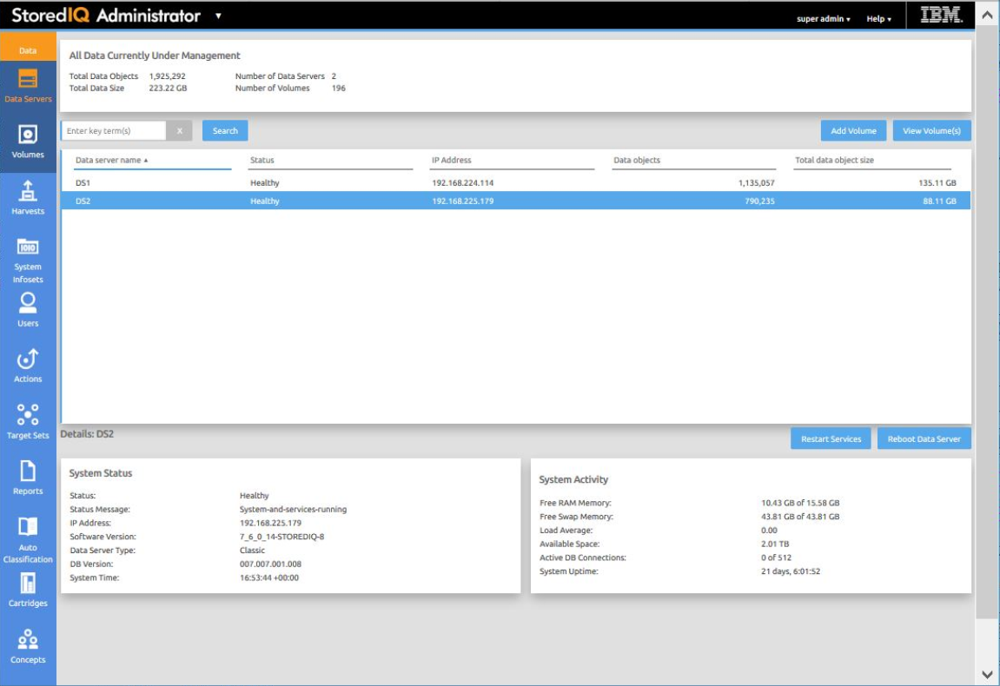

IBM StoredIQ Administrator
IBM StoredIQ Administrator
IBM StoredIQ Administrator helps you manage global assets common to the distributed infrastructure behind IBM StoredIQ applications.
IBM StoredIQ Administrator provides at-a-glance understanding of the different issues that can crop up in the IBM StoredIQ environment. These views are unique to the IBM StoredIQ Administrator application as they provide an overview of how the system is running. They allow access to various pieces of information that are being shared across applications or allow for the management of resources in a centralized manner.
The administrator is the person responsible for managing the IBM StoredIQ. This individual has strong understanding of data sources, indexes, data servers, jobs, infosets, and actions. This list provides an overview as to how IBM StoredIQ Administrator works:
Viewing data servers and volumes: Using IBM StoredIQ Administrator, the Administrator can identify what data servers are deployed, their location, what data is being managed, and the status of each data server in the system. Volume management is a central component of IBM StoredIQ. IBM StoredIQ Administrator also allows the Administrator to see what volumes are currently under management, which data server is responsible for that volume, the state of the volume after indexing, and the amount and size of information that is contained by each volume. Administrators can also add volumes to and delete volumes from data servers through this interface.
IBM StoredIQ is configured for integration with Information Governance Catalog, the Administrator can also manage which volumes are published to the governance catalog.
-
Scheduling harvests: Harvesting, which can also be referred to as indexing, is the process or task by which IBM StoredIQ examines and classifies data in your network. Using IBM StoredIQ Administrator, harvests can be scheduled, edited, and deleted.
-
Creating system infosets: System infosets that use only specific indexed volumes can be created and managed within IBM StoredIQ Administrator. Although infosets are a core component of IBM StoredIQ Data Workbench, system infosets are created as a shortcut for users in IBM StoredIQ Administrator.
-
Managing users: The user management area allows administrators to create users and manage users' access to the various IBM StoredIQ applications.
-
Configuring and managing actions: An action is any process that is taken upon the data that is represented by the indexes. Actions are run by data servers on indexed data objects. Any errors or warnings that are generated as a result of an action are recorded as exceptions in IBM StoredIQ DataWorkbench.Note: Actions can be created within IBM StoredIQ Administrator and then made available to other IBMStoredIQ applications such as IBM StoredIQ Data Workbench.
-
Managing target sets: Provides an interface that allows the user to set the wanted targets for specific actions that require a destination volume for their actions.
-
Reports: IBM StoredIQ Administrator provides a number of built-in reports, such as summaries of data objects in the system, storage use, and the number of identical documents in the system. You can create custom reports, including Query Analysis Reports for e-discovery purposes, and automatically email report notifications to administrators and other interested parties.
-
Auto-classification: Automated document categorization, what IBM StoredIQ refers to as auto-classification models, integrates the IBM® Content Classification's classification model into the IBMStoredIQ infoset-generation process. Data Experts can use IBM Content Classification to train a classification model, which is then registered with IBM StoredIQ Administrator. The registered classification model can be applied to an existing infoset in IBM StoredIQ Data Workbench to generate new metadata for the objects in the infoset. Metadata can be used in rule-based filters to create new infosets.
-
Cartridges: Cartridges are compressed files that contain analysis logic. When you add a cartridge to IBM StoredIQ AppStack, it can detect new data in documents during indexing and make these new insights searchable. For example, a sensitive pattern cartridge can enable IBM StoredIQ to detect passport numbers, phone numbers, and other IDs.
To apply the analysis logic contained in the cartridge, you must run a Step-up Analytics action that uses the cartridge on an infoset. IBM StoredIQ examines all documents in the infoset, applies the analytics, and then stores the analysis results in the IBM StoredIQ index.
Managing concepts: Provides the ability to relate business concepts to indexed data.
-
Managing Mule scripts: Helps you to create Mule scripts and upload script packages. These Mulescripts are used by IBM StoredIQ Policy Manager to create policies using the automation workflow.
-
DataServer - Classic: Data servers can be categorized in two types: DataServer - Classic and DataServer - Distributed. DataServer - Classic refers to the regular data servers. It uses either the current PostgreSQL or Lucene index as an index.
-
DataServer - Distributed: The distributed data server uses an Elasticsearch cluster instead of an embedded Postgres database. It increases the scalability and flexibility of the IBM StoredIQ deployment in a way that it can manage much larger amounts of data. Without adding more dataservers, data that is managed by the IBM StoredIQ deployment can be increased by adding new nodes to the Elasticsearch cluster. Search queries perform better on DataServer - Distributed
-
Connector API SDK: A connector is a software component of IBM StoredIQ that is used to connect to a data source such as a network file system and access its data. Using IBM StoredIQ Connector API SDK, developers of other companies can develop connectors to new data sources outside the IBM StoredIQ development environment. These connectors can be integrated with a live IBM StoredIQ application to index, search, manage, and analyze data on the data source.